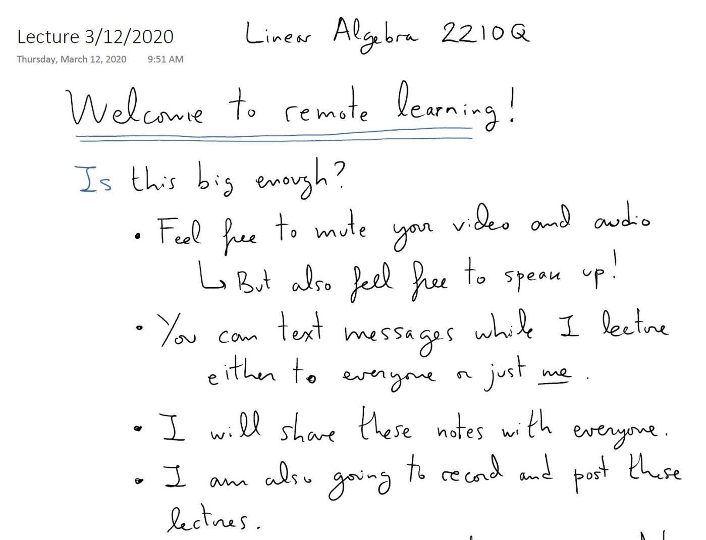
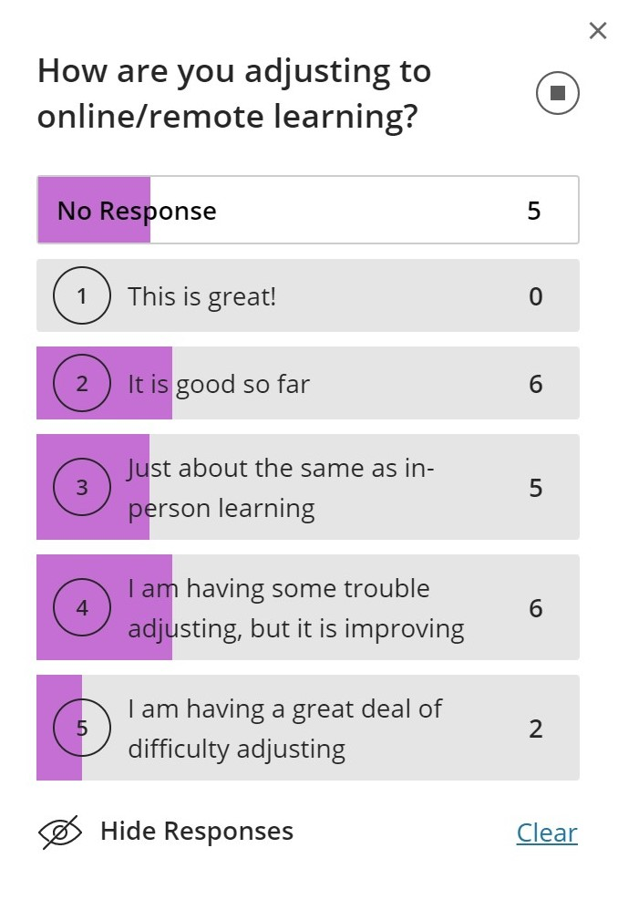
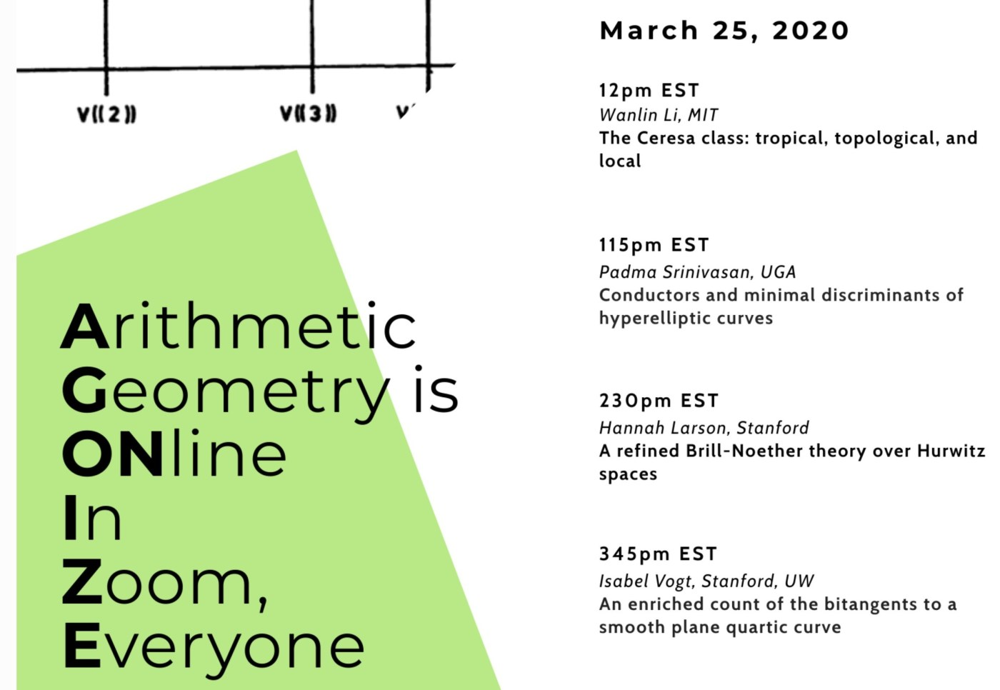
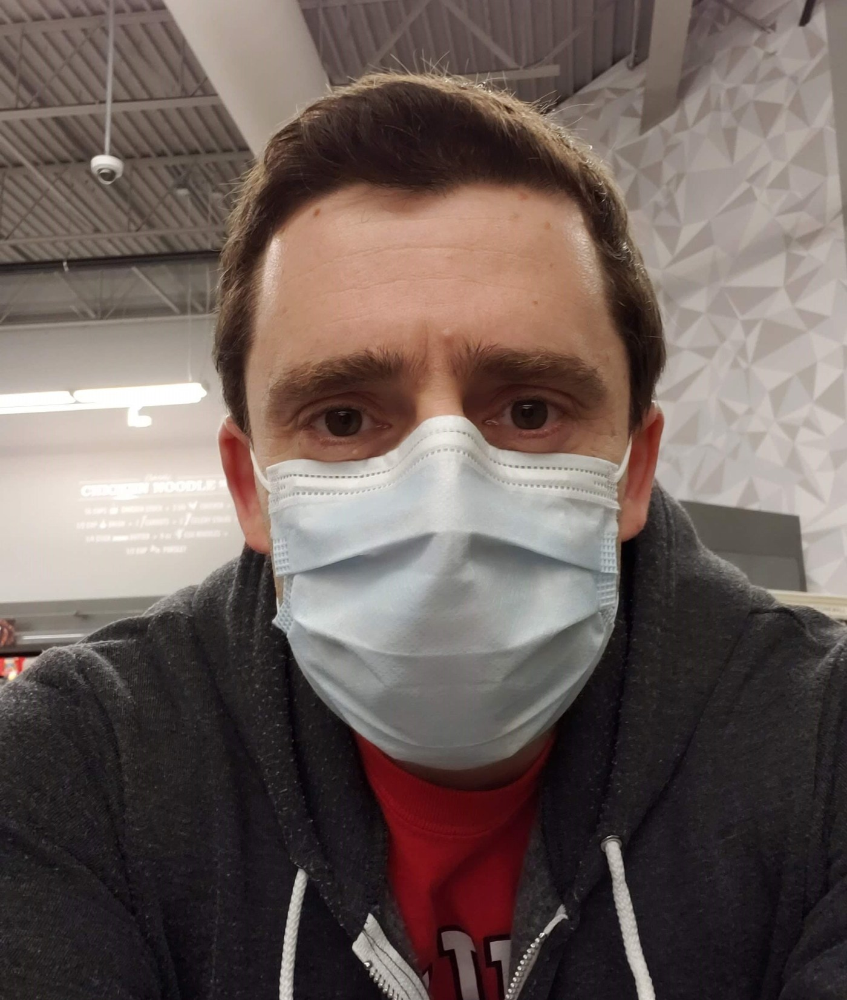
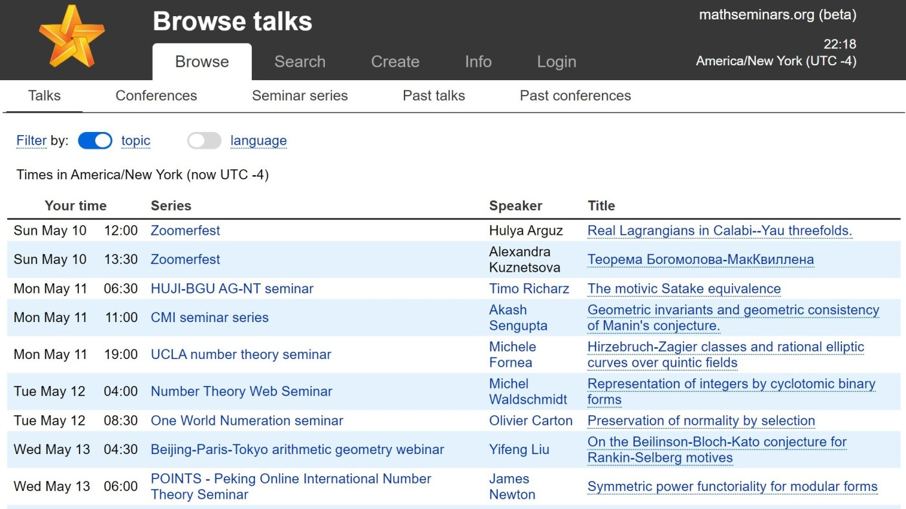
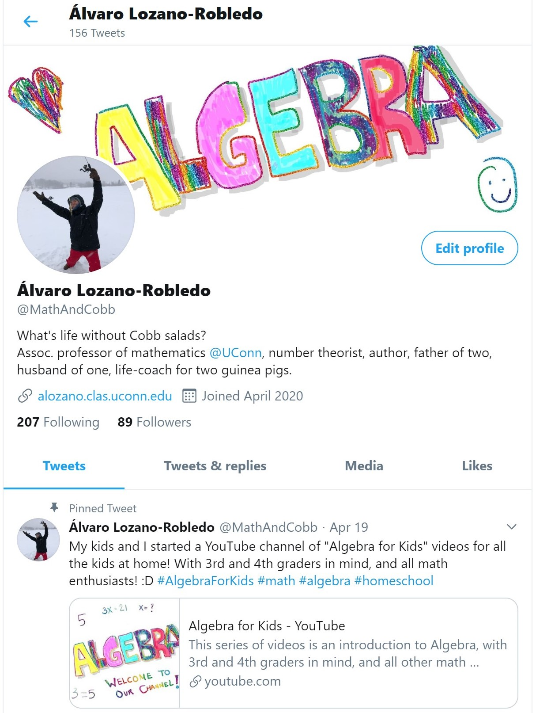
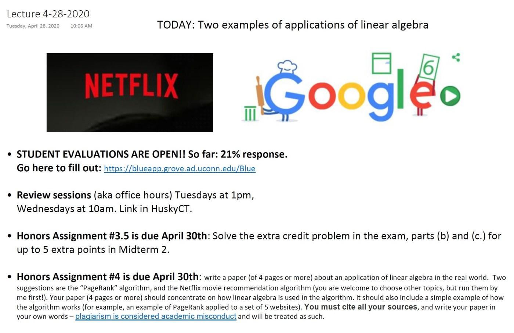

Inspired by this blog post by Anthony Bonato, I decided to write my own account of a mathematician’s life during the Covid-19 pandemic, in the form of a logbook. I was hoping to use the title “Math in the time of Covid-19” (as a nod to the great novel by Gabriel García Márquez) but that name was already taken by an interesting blog on the matter. This entry narrates from my 0-th up to my 60-th day of social isolation and partial house confinement. The post may be updated at a later time as the pandemic progresses. In the section headers I will record the number of confirmed cases and deaths in the USA (data from courtesy of worldometer.info).
January – March, 2020
The first confirmed case of Covid-19 in the US is detected on January 20th, 2020, in Washington State. The first fatality occurs on February 6th, in California. My home state of Massachusetts has its first confirmed case on February 1st while Connecticut has its first case on March 8th. By mid February, I was aware of the severity of the epidemic in Wuhan (China) but not overly concerned, as I thought it would evolve like one of the more recent strains of avian flu. In fact, on February 20th, I travel to Vermont to give a talk at UVM, and I do not recall that the epidemic came up in conversation. By late February, it is clear that the epidemic is growing exponentially in Italy, with a daily growth of approximately 25%, many days much higher than that, which means the number of cases is doubling every three days or less. By early March, the same pattern emerges in Massachusetts (we seem to be reproducing Italy’s epidemic graph with a two-week delay) and I am truly concerned for our well being. On March 8th, I cancel a research trip to UGA that I was really looking forward to (that would have taken place on 3/17-3/19), due to contagion concerns during flights to Georgia and back. On March 10th, the Governor of Connecticut prohibits state employees from traveling across state lines for official reasons, which puts me in an awkward position, since I live in Massachusetts and commute to UConn for work. As it turns out, the decision of whether to commute to UConn on Wednesday, March 11th, is settled for me by my kids’ school administrators.
Day 1 of Social Isolation (3/11/2020):
1,301 confirmed cases in the US, 38 deaths
My first day of social isolation and self-confinement at home is Wednesday, March 11th, 2020. While Connecticut has only a handful of unconfirmed cases, my home state of Massachusetts now counts 95 confirmed cases after a “super spreading” event at a Biogen meeting. Someone that was present at the event lives in my area, and on the late evening of May 10th, we learn that there are two confirmed cases in my town (of 14000 inhabitants). These cases have triggered an immediate response from the school system, canceling classes for my two kids (1st and 3rd grade). Children are told to remain at home on Wednesday while they performed a “deep cleaning” of the school facilities. UConn has not canceled classes yet, so out of an abundance of caution, since I live in a relatively small town, I decide to self-quarantine at home and, with the approval of the Head of my department, I will teach my last class before Spring break from home, on Thursday. My wife has a full time job as a data scientist and she is still commuting to her work place, so I stay home with the kids. They are happy to have a day off, so the games begin. Minutes into their first day of social isolation, one of my kids runs into a tree in our backyard and comes back inside bleeding profusely from several deep cuts on her nose and face (the scars will still be visible 59 days later, as of this writing).
In some notable news of the day, UVM has announced that all their classes will switch to remote learning until further notice, so we are all waiting for UConn to announce similar measures. The NBA has decided to cancel their season after a Utah Jazz player tested positive for Covid-19 (incidentally, a player who had joked about the virus a few days earlier). Actor Tom Hanks has tested positive as well. I find it infuriating that some people are only now understanding that the virus is a real threat when Hanks was infected… even though there were already tens of thousands of cases in Europe, and almost a thousand deaths in Italy alone. By this time, I have started to study every model and chart out there, and I am concerned about the distinct possibility of hundreds of million of cases worldwide, and millions of deaths.
Day 2 (3/12/2020): 1,630 confirmed cases, 41 deaths
Our kids’ school administrators have informed us that the facilities will remain closed on Thursday and Friday, and will evaluate whether kids can return to school on Monday. No resources are made available at this point for our children. Anticipating that this is not just a closure of three days, I start to look for online resources, and learn (through Teachers Pay Teachers) about the Moffatt Girls and their Home Learning Packets, which my girls start to work through. Using another site, I start to create daily math worksheets for the kids, to supplement the Moffatt packets. In addition, our kids start watching educational YouTube live feeds, like the Cincinnati Zoo Home Safari, or Mo Willem’s Doodles.
After printing out materials for the kids in the morning, my wife takes over and I hide in our home office to prepare for my first online class ever. UConn students are still on campus, but I inform my linear algebra class by email about the cases in my town, about my decision to teach from home to avoid being a vector in the spread of the disease, and invite them to join me in a WebEx video call during class time for a real-time lecture. I am lucky to have a laptop that converts into a tablet, and I can lecture by writing my notes on a OneNote notebook, and share the screen, so that my students can follow along as I write about the topics that we need to cover according to the syllabus. Overall, class goes well, without any technical difficulties. Students participate via the chat box, and to my surprise, students who had never participated during our in-person sessions, asked questions via chat. This may not be so bad after all. The session was recorded, so I post a copy of the video on our UConn Blackboard site (a.k.a. HuskyCT), so that students can watch it even if they did not attend the live lecture.

Day 3 (3/13/2020): 2,183 cases, 48 deaths
The President bans mainland Europeans from entering the US (and the ban will be extended the next day to UK and Ireland nationals). “This proclamation shall remain in effect until terminated by the President,” the edict reads. Will my parents be able to come to visit me in May, as planned? Probably not.
Fridays are one of my mostly-research days, when I try to concentrate on my papers. Instead, I spend the morning trying to get the kids to work on educational activities, and helping them with the assignments I have found for them. There are few minutes at a time when they are concentrating on their homework, and I can answer a few email messages. Otherwise, I am obsessing over coronavirus news, and graphs, and data. After feeding them lunch, they get a break, and I try to sit down in front of my computer to do research, but it is impossible to concentrate, so I read a few more articles about the virus, symptoms, conjectural treatments. At 5232 confirmed cases, Spain seems to be following the horrific pattern of Italy, and I am terrified for my parents and the rest of my family’s safety, who live in Madrid, the epicenter of the virus in the country.
Day 5 (3/15/2020): 3,617 cases, 73 deaths
The MA Governor announces that schools in the state will remain closed until April 6th. My wife’s company asks employees to work from home, so we are all now officially socially isolated. I am technically on Spring break, but it surely does not feel like one. During the next few days, we try to establish a routine for the kids, and incorporate new educational and physical education activities into the mix. They miss their friends, so on March 17th they have their first online playdate via Zoom.
Although there are only 164 cases in my state, I start to feel very uneasy about going to the supermarket to buy food, and of course my wife and I stop going to the local gym.
During a normal Spring break, I typically catch up on research, and work on referee reports, but I am barely able to get anything done this week. All I can manage to do is keep up with email.
Day 8 (3/18/2020): 9,317 cases, 171 deaths
Our kids’ school system has put together an educational plan, and today our children begin live classes with their teachers via Zoom. Each kid has an hour of instruction, plus a half hour of “specials” (library, gym, health, etc) each day. In addition, they receive assignments via SeeSaw, an online app. On paper, the plan seems decent, and my wife and I hope that the kids will be busy and working on their curriculum, so we can get some work done, but the first few days are a nightmare of technical difficulties. Everyone involved is extremely frustrated, nerves are fried, emotions run wild.
And yet, my wife and I count ourselves among the lucky parents, as our kids are old enough to be somewhat self-sufficient, and we can only imagine what parents with younger children are going through. Indeed, research collaborators with little kids are MIA.
Day 9 (3/19/2020): 13,898 cases, 239 deaths
I receive news that a family member in Spain, my father’s cousin and his wife, who we love dearly, have fallen ill to Covid-19. After a couple of days of trying to fight the virus at home, she has recovered but he has been hospitalized, and is currently fighting for his life in the ICU. I am devastated to learn this, so sorry for him and his family. My worst fears begin to materialize.
Day 14 (3/24/2020): 55,398 cases, 957 deaths
My Spring break is over, and I resume teaching my linear algebra class. I have decided to switch my online lectures to a system called “Blackboard Collaborate Ultra.” I am still writing on a OneNote notebook, sharing the screen, and answering questions that I receive via chat messaging. In addition, I begin to incorporate little polls and surveys during lecture, in order to gauge student understanding of the material. My notes start to be more lively, as I now am able to copy and paste nice images that illustrate concepts, and incorporate them into my lectures. Everything is video recorded and posted to our internal blackboard site, so students can choose to watch in synchronous or asynchronous style.

However, teaching an online class without being able to interact directly with students is dull and disheartening. It reminds me of Sir Ian McKellen’s reaction to acting in front of a green screen for The Hobbit’s movies:
It was so distressing and off-putting and difficult that I thought ‘I don’t want to make this film if this is what I’m going to have to do.’ It’s not what I do for a living. I act with other people, I don’t act on my own.
Sir Ian McKellen
Day 15 (3/25/2020): 68,905 cases, 1,260 deaths
As in-person seminars and conferences and other research events get canceled, the first online conference in my research area is happening today: AGONIZE (Arithmetic Geometry is ONline in Zoom Everyone). I attend a couple of the talks and it is heartwarming to see that many people have managed to connect and follow the wonderful talks. The event is organized well, it transpires very smoothly, and many people declare it a big success.

On the other hand, the Governor declares that schools will be closed until May 4th, but I have absolutely no hope that schools will reopen this academic year.
Day 17 (3/27/2020): 105,217 cases, 2,110 deaths
Due to growing concerns, we (Jennifer Balakrishnan, Keith Conrad, Christelle Vincent, and I) cancel our upcoming summer school and conference in number theory, CTNT 2020, that would have taken place in early June. This hits hard as we have already put a lot of work, for several months (since October 2019), into organizing the event: grants, logistics, dorms reservations, website, registration, invited speakers, etc. However, after the invigorating experience of AGONIZE, we start discussing the possibility of having an online summer school and conference instead.
Day 21 (3/31/2020): 193,353 cases, 5,151 deaths
As another positive outcome of the AGONIZE conference, I decide it is time to stop obsessing about the virus and try to be productive. To that effect, I try to stay away from news, charts, and spread models. Our kids are adjusting well into their new school routine, and as a result, I start to have time to dedicate to my research. In particular, I am able to finish and submit a new version of a paper that I have been revising for over a year, after some deep referee comments prompted a necessary overhaul of the manuscript. Resubmitting this paper feels like a huge accomplishment, particularly under these unreal set of circumstances. (See the arxiv for the article and the Love Letter to Birders to read about the genesis of the article).
Day 22 (4/1/2020): 220,295 cases, 6,394 deaths
Although our kids are receiving a decent amount of instruction online, they complete their homework pretty quickly, leaving a lot of free time in their hands. In order to supplement school work, I decide to start Algebra lessons via Zoom for my 3rd grader daughter and her friends. The parents of the kids involved are very happy to have their children join an extra educational activity, and the kids themselves seem to enjoy it as well. The primary goal is to make math fun, but also to motivate how algebra works and why it works. Hopefully, these mini lessons will help them in the future, when they learn Algebra in more detail. The idea is to teach them first how to solve equations that involve addition and subtraction, and then move to equations with multiplication and division. We are also mixing in word problems, so that the students translate words into equations and vice versa.
After the enthusiastic response by kids and parents alike, my daughters and I decide that, perhaps, other parents out there might want more mathematical content for their kids, so we create our own YouTube channel, and begin recording videos on “Algebra For Kids,” and posting them online.
Day 28 (4/7/2020): 409,225 cases, 15,526 deaths
Feeling increasingly unsafe when leaving my house, I start wearing a surgical mask to go to the supermarket (soon will be mandated). This adds to my anxiety, already heightened by the food and paper products shortages in the aisles.

On a brighter note, we attend our first car parades to celebrate kids’ birthdays in our neighborhood, from a safe distance. There is nothing like making children smile.
Day 29 (4/8/2020): 441,569 cases, 17,691 deaths
One of our closest friends in the neighborhood falls ill, and he is diagnosed (not tested) as very likely infected with Covid-19. This is a hard blow, because our friend is very cautious and is following the strictest social distancing rules we are adhering to. In the meantime, my relative in Spain is still fighting for his life in a crowded ICU in Spain. Are we all going to be infected at one time or another? I am now living in fear that no matter how cautious I am, I will eventually contract the disease.
Day 31 (4/10/2020): 509,604 cases, 22,038 deaths
Online mathematics seminars start to pop up everywhere, so much so that two postdocs at MIT (Edgar Costa and David Roe) create a website to keep track of all the talks available online. Mathseminars.org is born.

Day 32 (4/11/2020): 539,942 cases, 24,062 deaths
The US surpasses Italy’s death toll, and it is now the highest in the world. In addition, more than 22 million Americans have filed for unemployment aid since the President declared a national emergency, and the economy is crumbling. My wife’s job announces dramatic measures (mostly furloughs) but for now she is one of the lucky ones keeping her job, with a percentage reduction of her salary for the next 3 months.
Day 37 (4/16/2020): 682,454 cases, 34,905 deaths
My students have their second midterm today, which is the first one since remote learning started. There was much internal debate in our department about how to conduct exams, but the university decided that all students have the option to convert their courses to Pass/Fail and still count for credit and towards their majors. So I decided to give my students a timed take-home exam — no monitoring or proctoring of any kind. The exam was posted on our internal blackboard site, and they have roughly 2 hours to complete the exam and upload a PDF scan of their solutions. I am available during the exam in a chat room, in case they have questions I can answer. Overall, they did very well in their exam, so I am happy with the results.
However, the effects of Covid-19 and isolation on the student population are undeniable. One of my best students has been conspicuously absent from lectures, and has not submitted some assignments. I reached out several times, and not hearing back from him made me very worried, until he replied. He cannot concentrate at home, he has lost all his motivation to go on with his coursework. He is not the only one either. There are several other students whose grades and performance have declined dramatically since everyone went back home. Some students seem to keep thriving, while others have not been able to adapt, and I am worried about them.
Day 40 (4/19/2020): 770,014 cases, 40,901 deaths
I feel increasingly isolated. Looking for human interaction in all the wrong places, I decide to join Reddit and Twitter.

Day 42 (4/21/2020): 824,229 cases, 45,536 deaths
The Governor of MA breaks all parents’ hearts and announces that all schools will remain closed for the rest of the school year. We all knew it was coming, but no one wanted to accept the truth. Our kids, though, are getting into a groove and they are mostly self-sufficient by now, getting into their zoom calls, accessing their online homework, producing quality work in response to their teachers’ prompts. They miss their friends, though, and my older daughter breaks my heart from time to time, asking me how long will this last. “I don’t know, nobody knows,” is all I can muster. Kids are resilient but they are processing what is happening in their own way, and I wonder how will this affect them. One day, my oldest kid (9 year old) asked “Daddy, how many people are dying every day?” I shrugged and said “many.” She was not happy with my vague answer, she knows I know the exact number, so she insisted “I want to know, how many people are dying?” So I pulled a chart and showed her: 2,358 died yesterday. She was quiet for a few seconds looking at the screen, we hugged, and then she went back to her homework
Day 51 (4/30/2020): 1,095,023 cases, 63,856 deaths
Now that I am finally starting to get the hang of remote teaching, it is the last week of classes at UConn. I finish my week with a lecture on Tuesday on applications of linear algebra (Netflix recommendation and Google’s PageRank algorithms), and a review on Thursday on the material that the final exam will concentrate on. The students reach out to send touching messages of appreciation for the semester that ends. Something is missing, though, when I take my headphones out and shut my computer off.

Day 56 (5/5/2020): 1,237,633 cases, 72,271 deaths
My co-organizers and I gladly announce that CTNT, our summer program in number theory, will be happening fully online this year! I am super excited to make this happen. Our summer school and conference serves many purposes, on a regular year, but under these particular circumstances, we feel it is extremely important to offer instructional material for advanced undergrads and beginning graduate students. In addition, we hope to offer soon-to-be graduating PhD students, and soon-to-be in the job market mathematicians, the opportunity to speak at our conference and gain exposure and name recognition.
Day 57 (5/6/2020): 1,263,092 cases, 74,799 deaths
My students take their final exam at home, and they do fantastically well. I gave them plenty of time to complete it, and they performed their best. I am glad to be able to award very nice grades to a hard working bunch of honors students.
In the meantime, the US is starting to see more and more protests against the lockdown measures, and people who attend these demonstrations are getting sick as a result. The curve is flattening in some states, and spiking in others. The situation is worrisome to say the least. We are not out of the woods yet — we may be getting into much darker territories instead.
Day 60 (5/9/2020): 1,347,309 cases, 80,037 deaths
Final exams are over, grades submitted, summer is next, and I am broken inside. A UConn student said “even though I’m done and finished with everything, did good in my classes, etc. I still feel stressed and on edge” and I feel the same way.
At the time of this writing, there have been over 80,000 confirmed deaths in the US that are due to the virus, 31,587 in the UK, 30,395 in Italy, 26,478 in Spain, … a total of 280,224 deaths worldwide. At a personal level, I am thankful I have not lost anyone, but my relative in Spain is still in a hospital, very slowly recovering.
It is impossible to comprehend the number of casualties, but we try by comparing them to other historical figures. For example, in the US, we have now far surpassed the total of US deaths in the Vietnam War (58,209). In the last two days, the US has lost 3,109 lives to the virus, a number that exceeds the total number of deaths during the 9/11 terrorist attacks (2,996 deaths). How does one cope with these numbers? How does one try to keep a semblance of normality in their lives under these circumstances?